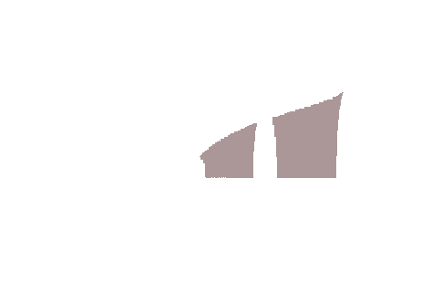

Applicazioni fisiche e geometriche dell'integrale
Oltre a quelle già incontrate nel par. 2.1, l'integrale ha numerose altre importanti applicazioni.
Energia potenziale di una forza elastica di richiamo. Lavoro di una forza
Una particella di massa m è soggetta ad una forza elastica di richiamo, in direzione dell’asse x, cioè ad una forza direttamente proporzionale allo spostamento da un punto fisso determinato (posizione a riposo) con verso tale da ridurre lo spostamento. Il caso tipico è quello prodotto da una molla soggetta a spostamenti sufficientemente piccoli dalla posizione a riposo.
Se si scelgono le coordinate sull'asse in modo che la posizione di riposo per la particella corrisponda ad x = 0 la forza avrà un’intensità data dalla formula
F = —kx (8.1)
dove k > 0 è una costante (detta costante elastica) che dipende dalla molla. La (8.1) si chiama legge di Hooke. Per calcolare l’energia potenziale associata alla forza F, calcoliamo il lavoro L che una forza applicata, Fapp; deve compiere per spostare la massa m, inizialmente a riposo, in un punto di ascissa xf. L’energia potenziale sarà data da Epot = — L. In base alla (8.1), la forza applicata è funzione della posizione ed è in ogni punto uguale ed opposta a F:
Fapp = -F = kx
Il lavoro elementare dL, relativo a uno spostamento da x a x + dx (|dx| molto piccolo) nel quale si può considerare Fapp = costante = kx, è dato da dL = kxdx. Integrando tra 0 e xf si ottiene
e infine Epot = -kxf/2.
Più in generale, se una forza agisce lungo una retta, che scegliamo come asse x, spostando un punto materiale da a a b, il lavoro della forza F(x) è dato per definizione dall'integrale:
Naturalmente, da un punto di vista fisico, è molto restrittivo assumere che il moto si svolta lungo una retta. Questa è una delle motivazioni che porteranno a sviluppare ulteriormente la teoria dell'integrazione, definendo gli integrali di linea, mediante i quali si darà senso al concetto di lavoro lungo una curva qualsiasi dello spazio.
Lunghezza di un grafico
Sia y = f(x) una funzione continua con la sua derivata prima f'(x), in un intervallo [a,b]. Vogliamo trovare una formula per la lunghezza del grafico di f. A tale scopo suddividiamo l'intervallo [a,b]. Vogliamo trovare una formula per la lunghezza del grafico di f. A le scopo suddividiamo l'intervallo [a,b] in n parti uguali, mediante i "soliti" punti x0 = a, x1, ..., xn = b; consideriamo ora la linea spezzata che ha per estremi i punti Pi ≡ (xi, f(xi)), che stanno sul grafico di f.
In base alla nostra idea intuitiva di lunghezza di una curva, la lunghezza ℓn di tale spezzata dovrebbe essere un'approssimazione per difetto della lunghezza degl grafico. Se esiste finito il limite di ℓn per n → ∞, sarà naturale assumere questo limite come definizione della lunghezza del grafico. Vediamo ora di mettere in pratica questa idea.
Anzitutto, è possibile calcolare ℓn al modo seguente:
D'altro canto, per il teorema di Lagrange applicato ad f su ciascun intervallino [xi-1, xi] si ha che esiste ξi ∈ [xi-1, xi] per cui risulta
f(xi) - f(xi-1) = f'(ξi) (xi - xi-1)
e quindi
Si riconosce quindi che la lunghezza della n-esima poligonale che approssima il grafico non è altro che una somma di Cauchy-Rieman n-esima della funzione (continua, nelle nostre ipotesi) sqrt[1 + f'(x)2], perciò si ha
Ecco come il calcolo infinitesimale permette di risolvere un altro problema "geometrico" che con metodi elementari non è affrontabile.
Esempoi 8.2 Si calcoli la lunghezza dell'arco di cruva y = x3/2 per x ∈ [0,a]. Essendo y' = 3/2 √x, si ha
Esempoi 8.3 Calcoliamo la lunghezza dell'arco di parabola y = x2 per x ∈ [0,a]. Essendo y' = 2x, si ha
Come si vede, anche in un caso elementare come quello della parabola, l'espressione trovata per la lunghezza dell'arco ha una certa complessità. Questo è un fatto abbastanza generale. Provando, a titolo d'esempio, a impostare il calcolo della lunghezza dell'arco di ellissi:
(cioè un quarto dell'elisse). Troverà che, salvo il caso banale a = b (circonfernza!) non è possibile determinare una primitiva della funzione integranda con i metodi noti.
Osservazione (Grafici di lunghezza infinita) Notiamo ora che per ogni funzione f: [a,b] → ℝ, continua, è possibile costruire la successione ℓn delle lunghezza delle poligonali di vertici (xi, f(xi). Abbiamo inoltre dimostrato che, se f è derivabile con continuità, esiste certamente limn → ∞ ℓn, che è calcolabile mediante un certo integrale. Se f è continua ma non è derivabile con continuit, può accadere però che il limn → ∞ ℓn non esista finito: in questo caso la lunghezza della curva risulterà infinita.
Esempoi 8.4 La funzione
è continua in [0,1] (ma la sua derivata non è continua in 0 e non è limitata in [0,1]). Si può dimostrare che il suo grafico ha lunghezza infinita:
Volume di un solido di rotazione attorno a un asse
Considerimao un solido ottenuto per rotazione attorno all'asse x del trapezoide individuato dalla funzione continua y = f(x), a ≤ x ≤ b. Il volume si ottiene sommando i contributi dV dei volumi dei cilindretti aventi altezza dx e raggio di base f(x). Essendo dV = πf(x)2 dx, integrando tra a e b si trova la formula per il volume:
vol = π ∫ba f(x)2 dx
Esempoi 8.4 Calcoliamo il volume dell'ellisoide di rotazione, cioè del solido che si ottiene facendo ruotare attorno all'asse x la parte superiore dell'ellisse
x2/a2 + y2/b2 = 1
(L'equazione cartesiana della superficie dell'ellissoide trovato è
x2/a2 + y2/b2 + z2/b2 = 1
ovvero un ellissoide con due semiassi su tre uguali tra loro). In questo caso
e il volume del solido è
formula che generalizza in modo naturale quelal del volume della sfera, (4/3) πr3, e che a sua volta suggerisce che il volume di un generico ellissoide (non di rotazione), di semiasse a,b,c, sia vol = (4/3)πabc (come si dimostrerà in calcolo2).